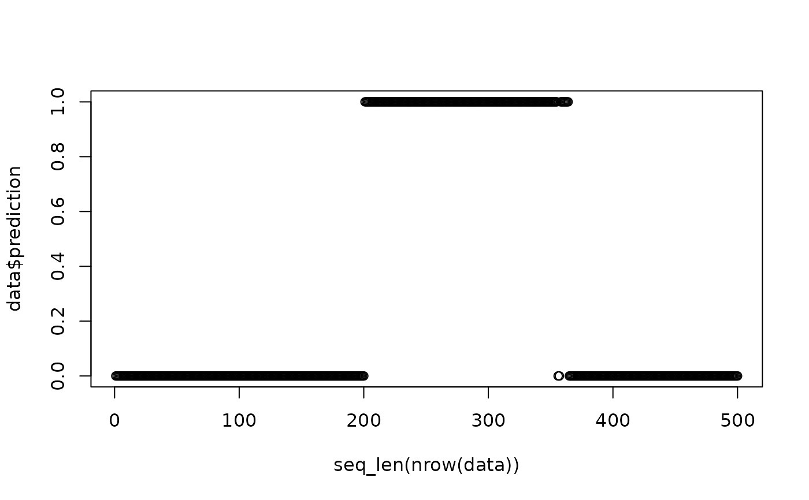
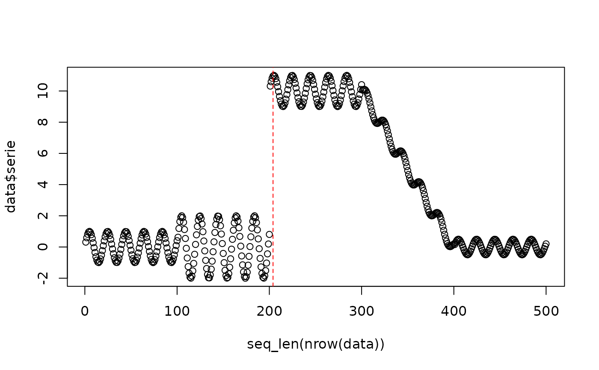

HDDM_A is a sequential detector based on Hoeffding's inequality that tests whether the mean of the monitored error stream has increased beyond statistically expected fluctuations. Because this implementation is error-based, it is primarily targeted at real concept drift. The theoretical basis follows Frias-Blanco et al. (2015) doi:10.1109/TKDE.2014.2345382.
Details
The detector reports increases of the error rate. With
two_side_option = TRUE, a significant decrease restarts the statistics but
is not reported as a drift. Values must be 1 (error) or 0 (correct
prediction), and missing values are treated as correct predictions (0).
References
Frias-Blanco, I., del Campo-Avila, J., Ramos-Jimenez, G., Morales-Bueno, R., Ortiz-Diaz, A., and Caballero-Mota, Y. (2015). Online and nonparametric drift detection methods based on Hoeffding's bounds. IEEE Transactions on Knowledge and Data Engineering, 27(3), 810-823. doi:10.1109/TKDE.2014.2345382
Examples
# Load Heimdall and the synthetic stream example.
library(heimdall)
# Fix the seed for reproducibility.
seed <- 1
set.seed(seed)
# Load the stream and derive the binary monitored signal.
data(st_drift_examples)
data <- st_drift_examples$uv_virtual_drift
data$prediction <- st_drift_examples$uv_virtual_drift$serie > 4
# Plot the binary stream that HDDM_A will monitor.
plot(x=seq_len(nrow(data)), y=data$prediction)

# Instantiate the HDDM_A detector.
model <- dfr_hddm()
# Process the stream sequentially and record the detector alarms.
detection <- NULL
output <- list(obj=model, drift=FALSE)
for (i in seq_len(nrow(data))){
output <- update_state(output$obj, data$prediction[i])
if (output$drift){
type <- 'drift'
output$obj <- reset_state(output$obj)
} else {
type <- ''
}
detection <- rbind(detection, data.frame(idx=i, event=output$drift, type=type))
}
# Print the detected drift points.
detection[detection$type == 'drift',]
#> idx event type
#> 204 204 TRUE drift
# Overlay the alarms on the original numeric stream.
plot(x=seq_len(nrow(data)), y=data$serie)
for (drift_index in detection[detection$type == 'drift', 'idx']) {
abline(v=drift_index, col='red', lty=2)
}
